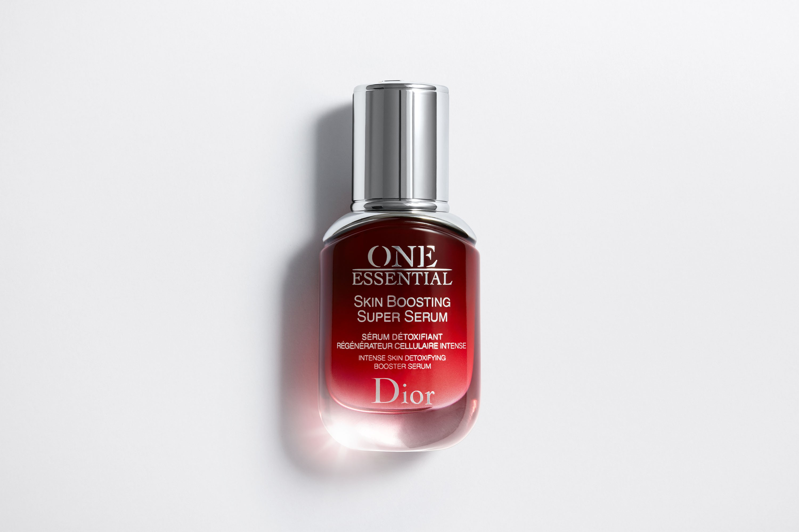
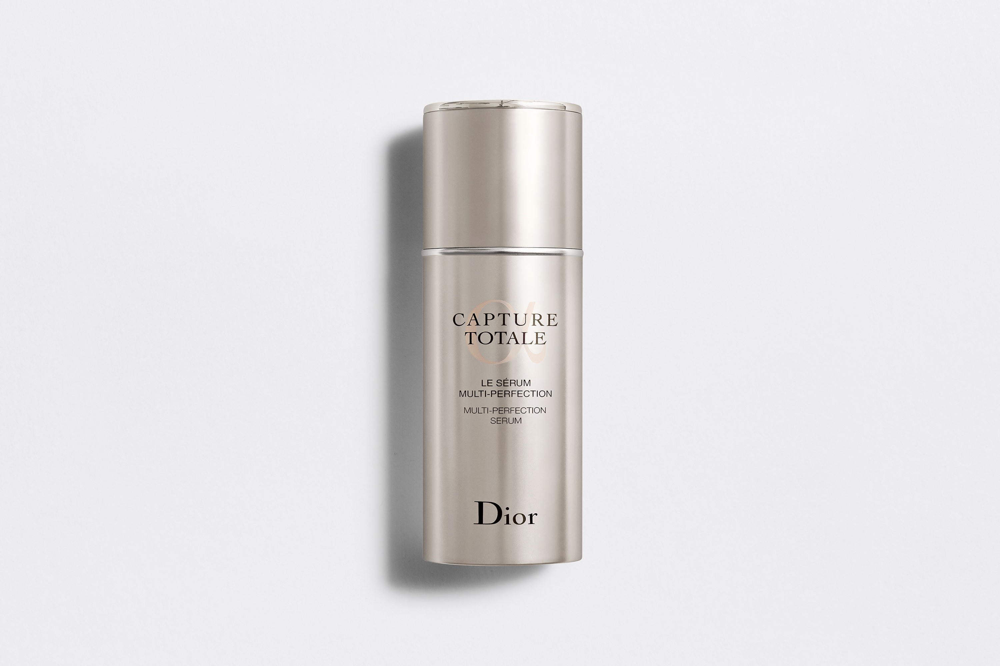
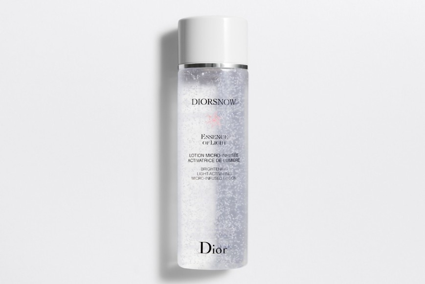
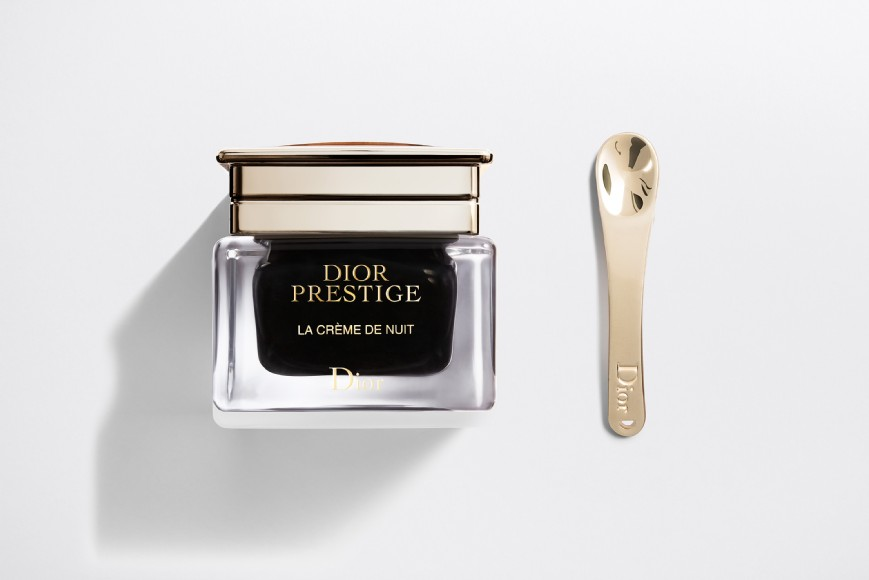
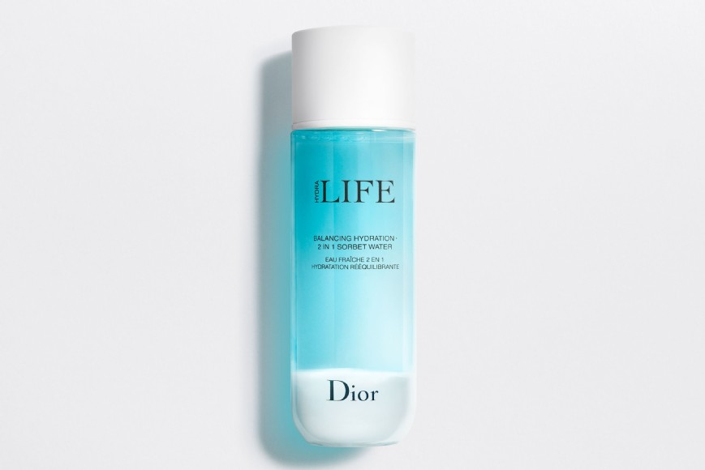
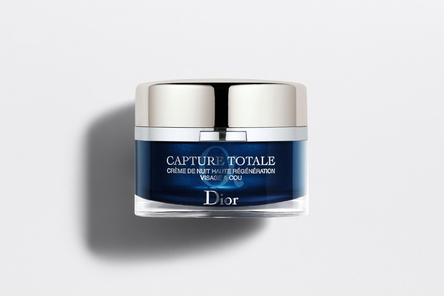
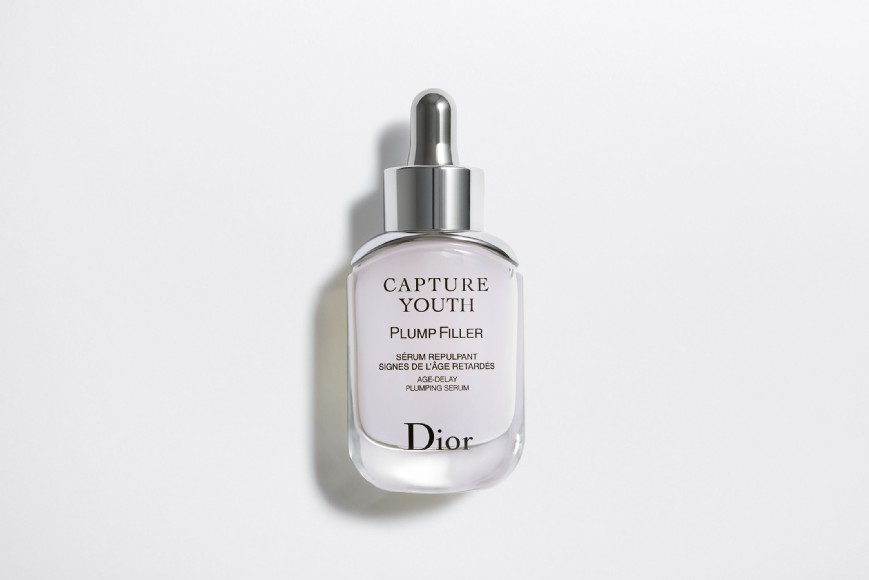
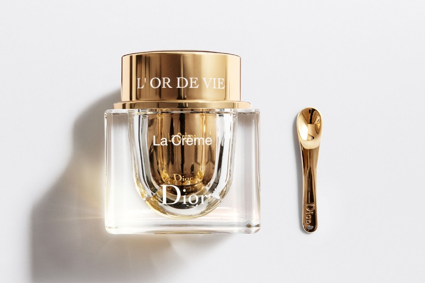
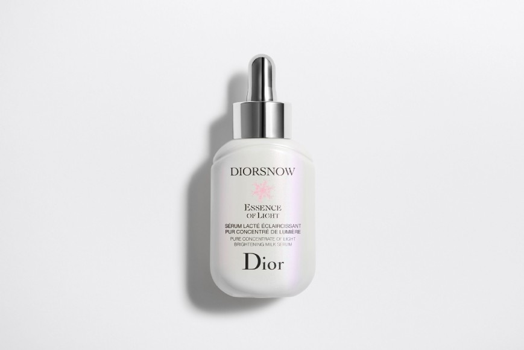
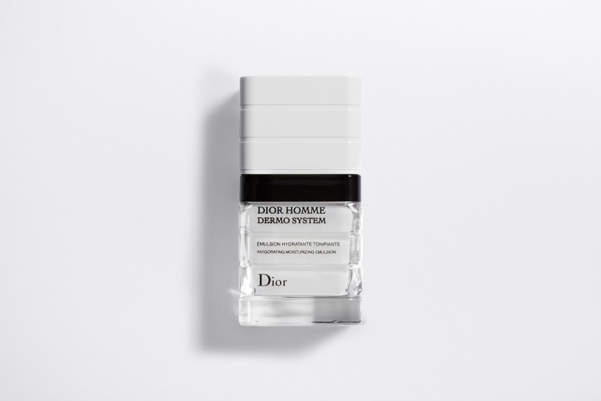

One Essential Super Serum
More than just a serum, One Essential Skin Boosting Super Serum detoxifies, regenerates, and boosts skin for a revitalized complexion. Daily, skin faces an onslaught of aggressors: UV rays, stress, and pollution. The solution: the new One Essential, with a more powerful formula that targets 100% of both outdoor(1) and — for the first time — indoor toxins(2) such as carpet, glue, varnishes, and electronic devices. One Essential quadruples the effects of active ingredients in the skincare products that follow(3) (retinol, vitamin C, longoza, hyaluronic acid, and bifidus) for lasting radiance. (1) Microparticles, heavy metals (2) In vitro test on ingredients (3) In vitro test on different major anti-aging ingredients
Ingredients: Water, Butylene Glycol, Glycerin, Alcohol, Caprylic/Capric/Sucinic Triglyceride, Ascorbyl Glucoside, Polymethylsislsesquioxane, Isohexadecane, Maltitol, PEG-60 Hydrogenated Castor Oil, Aminomethyl Propanediol, Lactic Acid, Phenoxyethanol, PEG-32, PEG-8, Acrylates/C10-30 Alkyl Acrylate Crosspolymer, Decyloxazolidinone, Sodium Citrate, Sodium Hydroxide, PEG-7 Glyceryl Cocoate, Tocopheryl Acetate, Tetrasodium EDTA, Pafum, Faex (Yeast) Extract, Lecithin, Calcium Pantetheine Sulfonate, Acacia Senegal Gum, Pyrus Cydonia Seed Extract, Salicylic Acid, Xanthan Gum, Malva Sylvestris (Mallow) Extract, Alcaligenes Polysaccharides, Dimethylmethoxy Chromanol, Aframomum Angustifollium Seed Extract, Sodium Metabisulfite, Butylphenyl Methylpropional, Polyvinyl Alcohol, Limonene, Oenothera Biennis (Evening Primrose) Root Extract, Kluyveromyces Extract, Hydrolyzed Soy Flour, Plankton Extract, Potentilla Erecta Root Extract, Adenosine, Sorbitol, Biosaccharide Gum-1, Hydrolyzed Soy Protein, Pentylene Glycol, Sodium Tocopheryl Phosphate, Algin, Citric Acid, Cellulose Gum, Ethylhexylglycerin, Alpha-Isomethyl Ionone, Geraniol, Potassium Sorbate
Capture Total
The new highly concentrated serum with an instant ""perfusion"" effect deeply fuses with the skin to stimulate cellular synchronization in its every layer1. The face's plump curves and youthful contours are restored. 1In vitro tests on ingredient.
Ingredients: BOOSTED LONGOZA OF MADAGASCAR EXTRACT A fascinating flower with extraordinary natural age-defying powers, Longoza is an incredible ally in the fight against wrinkles and loss of firmness. For the new Capture Totale Le Sérum, Dior Researchers have crafted a boosted Longoza extract from the Dior Gardens with enhanced properties, capable of synchronizing cells, including stem cells, in every layer of the skin1.
Diorsnow
The Diorsnow brightening light-activating micro infused lotion is the 1st brightening moisturizing lotion* enriched with Edelweiss & microcapsules of soothing vitamin E. As the lotion fuses into the skin, the microcapsules melt like snowflakes in the spring, fusing into the ultra-fresh, gel-liquid texture to release their active ingredients. The skin is instantly softer, suppler and naturally more radiant. Day after day, spots and shadow areas are diminished revealing a fresh rosy skin, that appears illuminated from the inside. *By Dior
Key Ingredient: THE EXCEPTIONAL BRIGHTENING POWER OF THE EDELWEISS FROM DIOR GARDENS Skin evenness and colour are determined by a pigment known as melanin. With aging and repeated sunlight exposure, the undesirable sallow colour of melanin spreads all over the skin, altering its evenness. Over time, melanin also becomes darker, damaging the natural skin colour. Dior researchers have discovered that Edelweiss extract from the Dior Gardens in Switzerland interferes in this process and can diminish, correct and prevent the creation of dark spots deep down. Preventive action against spots deep inside the skin is one of the most effective ways to achieve lasting efficacy on skin evenness and colour correction.
Dior Prestige
Applied after the Nectar de Nuit, its rich and opulent balm-like texture literally wraps the skin, deeply comforting and plumping it. It is also ideal for the delicate areas of the neck and décolleté, which regain strength and density.
Ingredients: ROSE DE GRANVILLE NECTAR, EXCEPTIONAL REJUVENATING PERFORMANCE Dior researchers have developed exclusive processes to extract the potent properties of Rose de Granville, while ensuring that they remain pure and intact. Convinced of its infinite cosmetic potential, these experts have an incredible collection of extracts that are continuously analyzed by Dior Science. 9 years of research were required to select, ecologically transform and concentrate the Nectar.
Dior Hydra Life
Like a wave of freshness, this powerful toning lotion, enriched with prebiotics, helps hydrate and rebalance the skin while minimizing minor imperfections (pores and shine).
Key Ingredients: - Mineral powders help minimize the appearance of imperfections. - The powerful prebiotic helps stabilize skin flora, day after day. - Jasmine water and mallow offer exceptional hydrating power. - Haberlea reinforces the skin's natural defenses.
Capture Totale
More beautiful and visibly younger upon waking... This is the feat of the new Capture Totale Intensive Night Restorative Creme, the remarkable skincare with a boosted age-defying, anti-fatigue formula. The night creme helps to support nighttime revitalization* to minimize visible and deep-set signs of aging and fatigue. *In vitro test on ingredients
Key Ingredient: LONGOZA, THE ANTI-AGEING JEWEL OF DIOR GARDENS Discovered in Madagascar twenty years ago by Dior ethnobotanists, longoza has become the outstanding natural activator of Capture Totale skincare. Ten years of research have enabled scientists at Dior to reveal its multiple anti-ageing properties and exceptional regenerative power on skin cells.
Capture Youth
Derived from natural-origin fermented wheat, the hyaluronic acid molecules in this serum have different molecular weights to both rehydrate skin on the surface and help to restore the skin's plumpness. Enriched with antioxidant boosting iris extract and composed of 87%* natural-origin ingredients, this serum has a fresh, nourishing texture that leaves skin feeling smooth and plump. 1 - Active ingredient: natural hyaluronic acid from fermented wheat helps to hydrate and plump skin 2 - Iris extract boosts skin's natural antioxidant power** 3 - 87% naturally-derived ingredients* * values calculated on the basis of ISO standard 16128 part II and according to the raw ingredient data sent to date by our suppliers ** in vitro test on ingredients
Ingredients: Water. Dipropylene Glycol. Glycerin. Glycolic Acid. 2-0 Ethyl Ascorbic Acid. PPG-26-Buteth-26. Tromethamine. Phenoxyethanol. Sodium Citrate. Xhanthan Gum. Adenosine. Sodium Tocolpheryl Phosphate
L'or de Vie
Enriched with ultra-nourishing vine wax, the creamy, melt-away texture of La Crème deeply and lastingly nourishes the driest skin and envelops it in absolute comfort. The Dior tip: apply morning and evening to face, neck and décolleté. Glide over your face with a smoothing stroke to fully benefit from the powers of L’Or de Vie. Continue down to the neck and décolleté: your hands join together under the chin, gently gliding downwards to envelop your neck and décolleté.
Key Ingredient: THE ORIGIN OF CHÂTEAU D'YQUEM'S AGE-DEFYING POWER: THE SAP For the past 30 years, Dior Science has researched its enormous cosmetic potential. A true botanical enigma, Yquem Sap is an exceptional antioxidant with unequaled power*. Today, Dior Science reveals a new power: Yquem Sap is a gift of longevity. It is capable of encouraging a very wide array of factors known to prolong the skin’s youthful appearance. The spectrum of its action is spectacular. It surpasses that of all other ingredients**. Intensely stimulated and perfectly protected, the skin enters a virtuous cycle of continuously improving, unimpaired beauty. The skin becomes more and more beautiful and increasingly strong. * In vitro tests vs. the most renowned antioxidants: Vitamin C, Vitamin E, Idebenone and a competitor vine extract ** Dior
Diorsnow Essence of Light
The Diorsnow Essence of Light Brightening Milk Serum is powered by revolutionary D-NA Light Reboot Technology* that helps reestablish the skin's natural luminosity. This formula is the first-ever triple Quasi-Drug** (QD) serum from Dior skincare: brightening, soothing, and anti-roughness. Natural-origin Edelweiss and Yeast Extract brighten and help reestablish the skin's natural luminosity. The milky, iridescent texture melts into skin, infusing it with instant radiance. Day after day, the skin's complexion is more even and dark spots look minimized. *Diorsnow Native Aura Light Reboot Technology **Quasi-Drug (QD) is a major Japanese certification administered by the Japanese Ministry of Health, Labor, and Welfare (MHLW) that refers to cosmetics with close-to-medical standards of efficacy.
Key Ingredient: D-NA LIGHT REBOOT TECHNOLOGY* [BRIGHTENING EDELWEISS + YEAST EXTRACT] THE EXCEPTIONAL BRIGHTENING POWER OF THE EDELWEISS FROM DIOR GARDENS IN SWITZERLAND Skin evenness and colour are determined by a pigment known as melanin. With aging and repeated sunlight exposure, the undesirable sallow colour of melanin spreads all over the skin, altering its evenness. Over time, melanin also becomes darker, damaging the natural skin colour. Dior researchers have discovered that Edelweiss extract interferes in this process and can help diminish, correct and prevent the creation of dark spots deep down. Preventive action against spots deep inside the skin enables long-lasting efficacy on skin evenness and colour correction. THE PROTECTIVE & STRENGHTENING POWER OF DIOR EXCLUSIVE YEAST EXTRACT When exposed to repeated daily aggressions such as strong UV rays, humidity, pollution and lifestyle habits, weakened skin cells adapt to environmental constraints and durably alter skin's natural colour. These changes are called Epigenetic modifications and lead to lasting skin darkening. Although these changes are lasting, they are not irreversible. The Dior exclusive ultra-potent natural Yeast Extract acts at the heart of skin cells to help reestablish skin's natural luminosity and protect against further natural skin colour changes due to external aggressions. *Diorsnow Native Aura Light Reboot Technology
Dior Homme Dermo System
The Dior Innovation Center presents the first dermatological treatments designed exclusively for men. Created in conjunction with the Harvard Medical Center, Dior Homme Dermo System offers the latest in skin care technology. Housed in an ultra-chic black and glass bottle designed by former Dior Homme menswear designer Hedi Slimane, this quick-absorbing soothing fluid moisturizes, mattifies the skin, and instantly refines its texture. Apply daily, morning and evening after cleansing.
Benefits: Skin is moisturized and matified. The complexion is uniform and bright.
Key Ingredient: β-ECDYSONE AND THE VITAMIN E PHOSPHATE Two patented active ingredients for a synergic action: β-ecdysone • Repairs nicks and cuts • Stimulates cellular regeneration Vitamin E Phosphate • Anti-free radical cellular protection